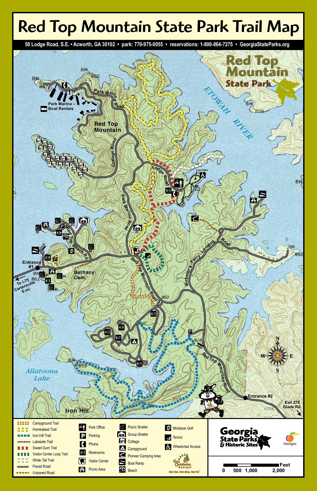

- Cloudland Canyon
- Fort Mountain
- Redtop Mountain
- Amicalola Falls
- Vogel State Park
- Tallulah Gorge
Legend
Red Top Mountain State Park
About the trail:
This popular park on Lake Allatoona is ideal for swimming, water skiing and fishing. Visitors can bring their own boats or rent from nearby marinas. A sand swimming beach is nestled in a cove and surrounded by trees, providing a great place to cool off during summer. Picnic shelters and group shelters may be rented for meetings, parties, reunions and other celebrations. Guests often stay overnight in rental cottages, a spacious campground, or the park’s lakeside yurt.
While best known for the 12,000 acre lake, Red Top Mountain is also a hiker’s haven. More than 15 miles of trails wind through the forested park, providing opportunities for exercise and nature photography. A short, paved trail behind the park office is suitable for wheelchairs and strollers, welcoming guests to explore a reconstructed 1860s homestead. The gravel-topped 4 mile Iron Hill Trail is open to both hikers and bikers, offering pretty views of the lake’s shoreline.
Named for the soil’s rich red color caused by high iron-ore content, Red Top Mountain was once an important mining area. Iron pour programs are occasionally held near the Vaughn Cabin behind the park office. The park also maintains Allatoona Pass Battlefield, a historically significant battlefield due to the well-preserved trenches and earthworks.